Round 6: what changed on screen, and what's still open
Real captures from the game at 960×540, same save and same spot in each pair. "Before" is the build before rounds 5–6 (commit 4946344). "After" is now (d298b42). "Proposed" is a live in-game mock of a fix, not a paint-over. Click any image to enlarge.
Rounds 5–6 changes
1. Photo keys and the activity panel
Hoarfrost Glade photo, PinewindThe photo keys moved from over the compass to the bottom of the frame on a dark panel. The goal's "Next" line hides while you aim. The activity panel dropped below the compass so it no longer covers the goal line.
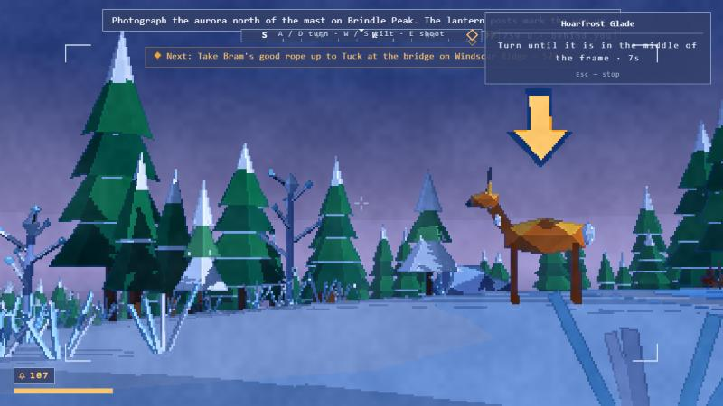
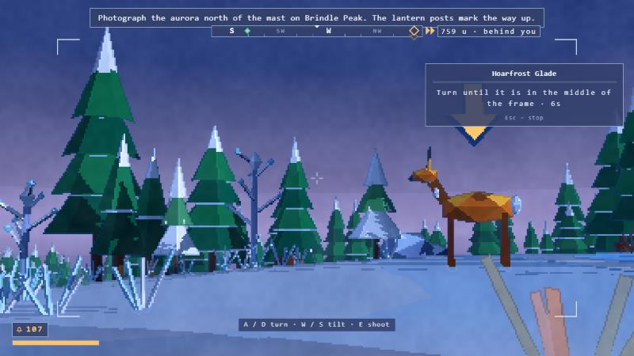
2. Pip's lantern glow at dusk
Hamlet edge, duskAfter dark, Nana's lantern lights a warm pool round Pip, so the bird stops vanishing into the blue snow.


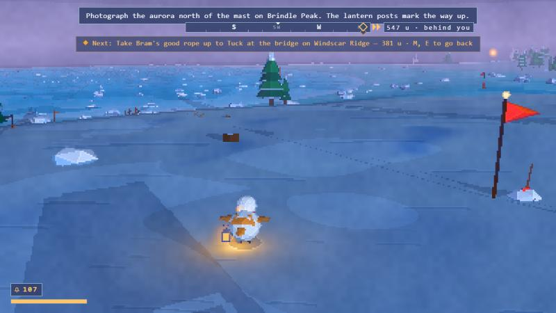
Why a proposal: close up (see the fish shots below), the light at head height burns an orange spot on Pip's face. Lowering it fixes that but lights less of Pip's breast.
3. Green markers for things to do nearby
Hamlet, looking north toward the Market LampsA small green gem now turns over each activity you haven't done within 90 u, and green ticks on the compass point to ones within 60 u. A line under the goal names each one once ("Market Lamps nearby — north, 27 u").
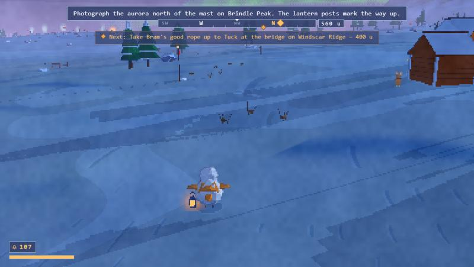
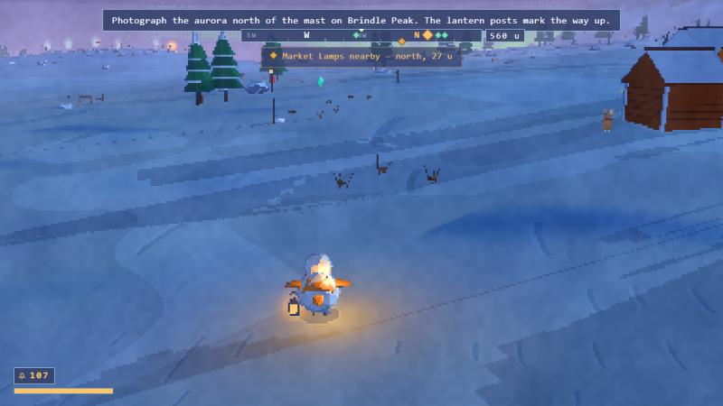
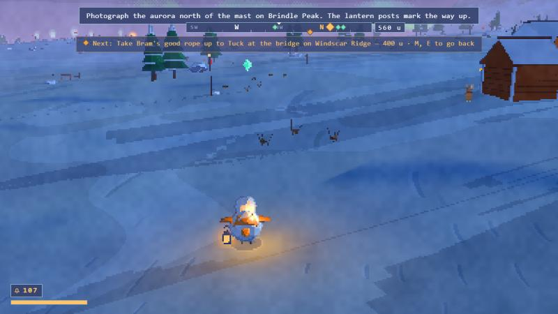
Open issues for round 7
4. Orange bar across the aurora photo
Aurora photo, Brindle PeakThe critic blamed the mast. It isn't the mast: it's the photo spot's own orange start frame, standing right beside you, so it sits in the viewfinder.

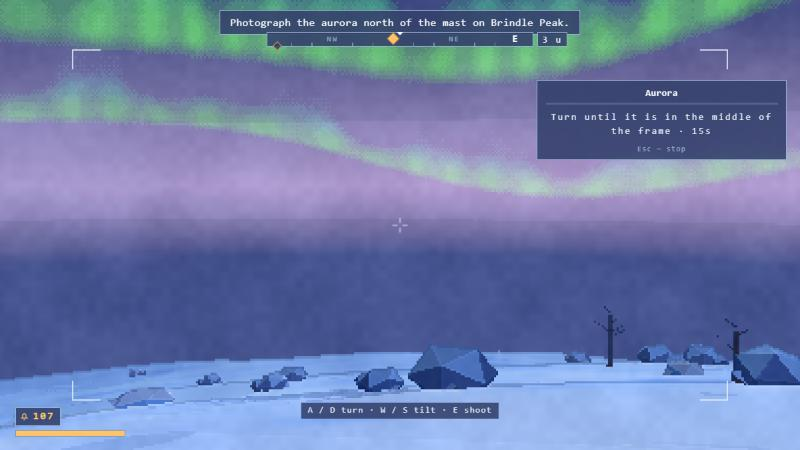
5. The fish you catch
Creek Pool, Pinewind, a graylingThe catch hangs pale grey against pale snow and water: it reads as two loose flat shapes, not a fish.
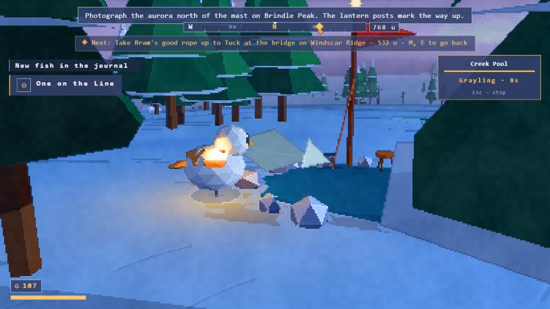
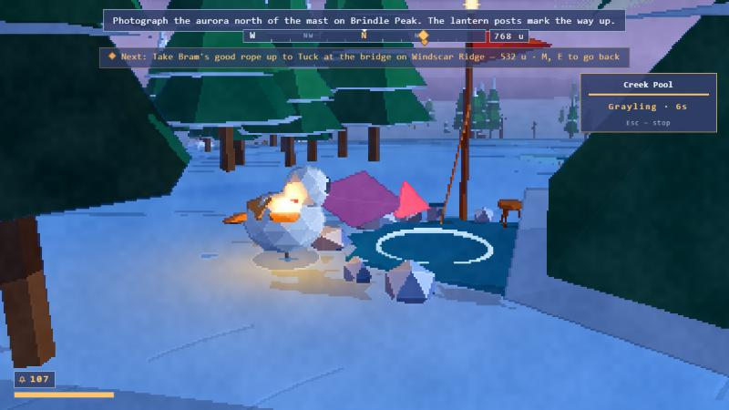
6. The bell you throw at
Bell Ring, Hamlet squareConfirmed. The bell is the small dark red shape at the top of the post, and it reads as a pennant. Nothing tells you it's the target, and the aim dots start off to one side of it.
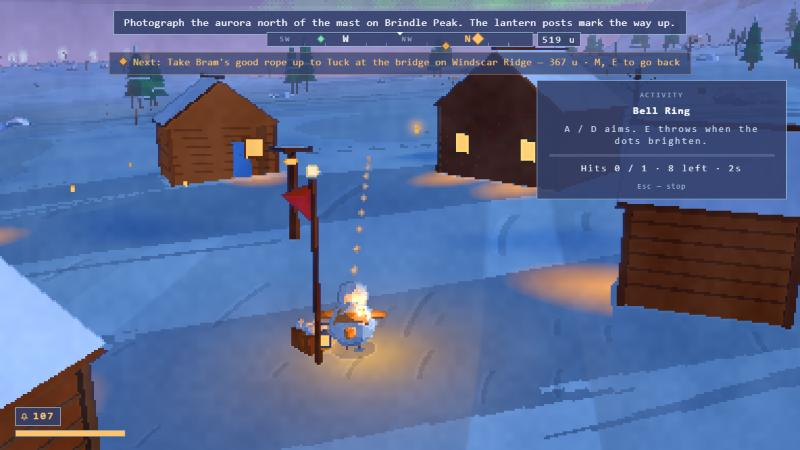
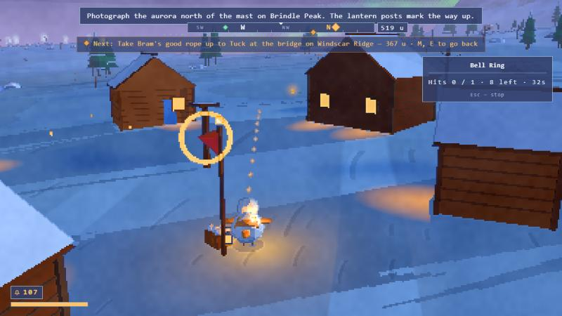
7. The "whiteout" on Windscar Ridge
Climbing the ridge faceOn the steep face the slope fills the frame: one blue surface with nothing on it. The critic filed this as camera.
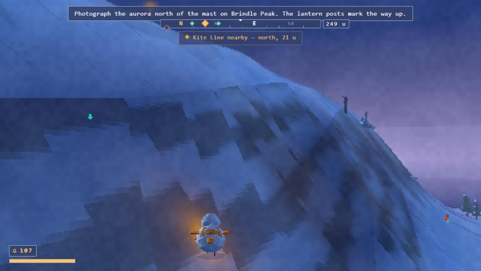